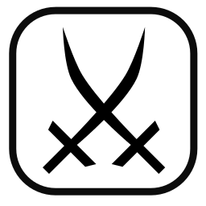

ABOUT
In essence, I'm a game development enthusiast. I've been messing with games since around 14yo, and with digital painting even younger, always trying to learn as much as I could about every single aspect of really, computer science in general, but with most emphasis on visual art and programming. I'm the low level type of person, I like to understand how things work under the hood. Big fan of the quote: "If I don't know how to implement it, then I don't know it enough".
RELEVANT WORK XP
-
InoBram Automações - Embedded Python development: 1.5 year
Working at the engineering team, I had the opportunity to learn Python on an embedded system, Beaglebone Black. I worked on a product which was a aviary's ambience controller, a central intelligence responsible for managing fans, heaters, curtains, hoods and inlets, reading sensors and reacting accordingly: SMAAI-5.
-
Pixeldonym - My own pre-incubated game studio: 2 years.
In 2017, at age of 20, I started a game studio company at my university's pre-incubator (was studying computer engineering at the time), and published my first mobile game: Witcher Spells, which after a few years of inactivity, was removed from the store :/. It was a big experience of why one shouldn't use MVP strategy with games, but well, I learned a lot on the process, and a lot more since then, specially in entrepreneurship and digital painting for games.
-
Softfocus - Python Tech Lead & Fullstack developer: 3+ years, so far.
Currently working with web as fullstack developer, in multiple products, using mostly Django and Angular. Here I had the opportunity to work with an amazing organizational culture, amazing people, and learned a lot about web development, unit testing, TDD, Agile, team working, self-managing teams, responsibility and much more. As a tech lead I'm having the opportunity to orchestrate a migration from a monolithic to a microservices architecture using Kubernetes, Django and FastAPI, as well as learning, teaching and sharing knowledges with pretty much the whole company, including other stacks.

SKILLS
- Programming on multiple languages (C, C++, C#, Python, Type/Javascript, Java, GLSL, HLSL, Lua).
- Other NON-PROGRAMMING languages (HTML, CSS, SCSS, etc.).
- A good grasp of linux and multitasking OSs.
- Unity & Unreal game development.
- Software version control tools like git, GitHub, GitLab, BitBucket.
- TDD and Unit Testing.
- Agile development, Kanban (with capital "K") methodology, OKRs, Trello, Jira, etc.
- Graphics programming, materials, shaders, PBR, rendering paths and techniques, raymarching.
- Digital painting, illustration, concept art, technical art, game assets/art, etc.
- Projects/experiments using OpenGL/DirectX, X11, Win32 API, SDL, GLFW, SFML, and other on my GitHub.
- Machine learning and image processing AIs.
- Web development frontend + backend (Fullstack), Django, Angular and Node.
- Experimental knowledge on Docker + Kubernetes, Linux cgroups + namespaces and copy-on-write.
- Databases (postgresql+postgis and mysql).
- Blender 3D Modeling, texturing, Cycles & Eevee rendering, baking, rigging and animation.
- Basic knowledge of assembly/machine language, instructions, registers, clock cycles, SIMD, cache-friendly programming, CPU architectures...
- C2 (Proficient) english level certificate by EF Set.
- Good softskills, teamwork, enthusiasm and synergy.